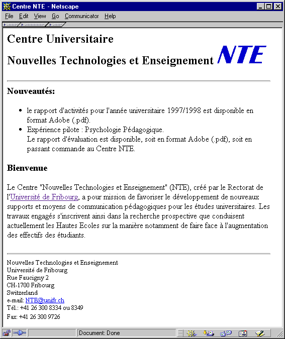

En utilisant un éditeur de texte simple, tel que NotePad, formatez le texte ci-dessous (présent dans le fichier texte_de_depart.txt) :
Centre Universitaire Nouvelles Technologies et Enseignement Nouveautés: - le rapport d'activités pour l'année universitaire 1997/1998 est disponible en format Adobe (.pdf). - Expérience pilote: Psychologie Pédagogique. Le rapport d'évaluation est disponible, soit en format Adobe (.pdf), soit en passant commande au Centre NTE. Bienvenue Le Centre "Nouvelles Technologies et Enseignement" (NTE), créé par le Rectorat de l'Université de Fribourg, a pour mission de favoriser le développement de nouveaux supports et moyens de communication pédagogiques pour les études universitaires. Les travaux engagés s'inscrivent ainsi dans la recherche prospective que conduisent actuellement les Hautes Ecoles sur la manière notamment de faire face à l'augmentation des effectifs des étudiants. Nouvelles Technologies et Enseignement Université de Fribourg Rue Faucigny 2 CH-1700 Fribourg Switzerland e-mail: NTE@unifr.ch Tél.: +41 26 300 8334 ou 8349 Fax: +41 26 300 9726
afin d'obtenir une présentation similaire à celle de la figure ci-dessous :

Pour vous aider nous vous proposons de passer par les étapes suivantes :